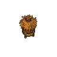

Bee hive
| Bee hive | |
|---|---|
 | |
Basic information
| |
Required Technology :
|
Bee domestication |
Related pages :
|
Foraging |
Building Information
| |
Horizontal x Vertical :
|
3x3 |
Rotatable :
|
False |
Location(s)
| |
| Apiary | |

The bee hive is used to raise bees and can be harvested once a day. It takes only  10 to harvest, half the energy that it would take to harvest from a wild hive. Bee hives can only be built in the apiary.
10 to harvest, half the energy that it would take to harvest from a wild hive. Bee hives can only be built in the apiary.
Note that the amount of bees you'll need to build the hive varies from 10 to 20 depending on your version of the game. 10 is for PC and Console, 20 for Mobile[1].
From the 4 broken hives (3 at the Apiary, 1 behind the Beekeeper), you can recover up to 1×
Flitch and 3×
Metal scrap per hive.
Cost
| Icon | Materials Required | Energy | Notes |
|---|---|---|---|

|
4× Flitch |
Requires: Bee domestication |
Products
| Item Produced | With Beekeeper Perk |
|---|---|
| 0 - 2× Bee |
0 - 2× Bee |
| 2× Honey |
4× Honey |
| 0 - 1× Beeswax |
0 - 1× Beeswax |
Notes
[1] Switch version needs 10x bees (version 1.310) also on ps4 and Xbox One the cost of bees for a bee hive is now 10.
| ||||||||